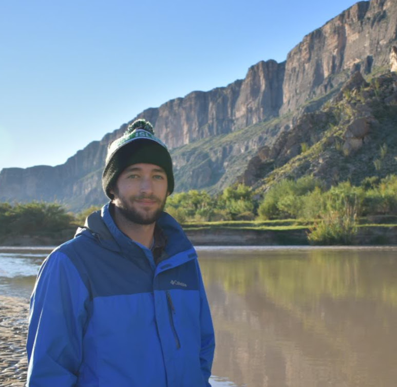

About Me
Hi, I'm Sam! I'm a former sales development specialist based in Austin, TX who felt I had more to offer an employer than annoying potential customers over the phone. I'm originally from Raleigh, North Carolina, and graduated from UNC Chapel Hill with a double major in Spanish and Global Studies as well as a Business Essentials certification from UNC's Kenan-Flagler Business School.
Outside of work, chances are you'll find me outside somewhere. Whether it's visiting a National Park, going for a hike in the hills west of Austin, or just working on the garden in my backyard, I always make an effort to get out in the sun for a little bit each day. If I'm not in the great outdoors, I'm probably glued to the TV watching UNC Basketball take a run at another national title or watching the Carolina Hurricanes take a run at another high draft pick.
Thanks for checking out my page, and feel free to connect with me on LinkedIn!